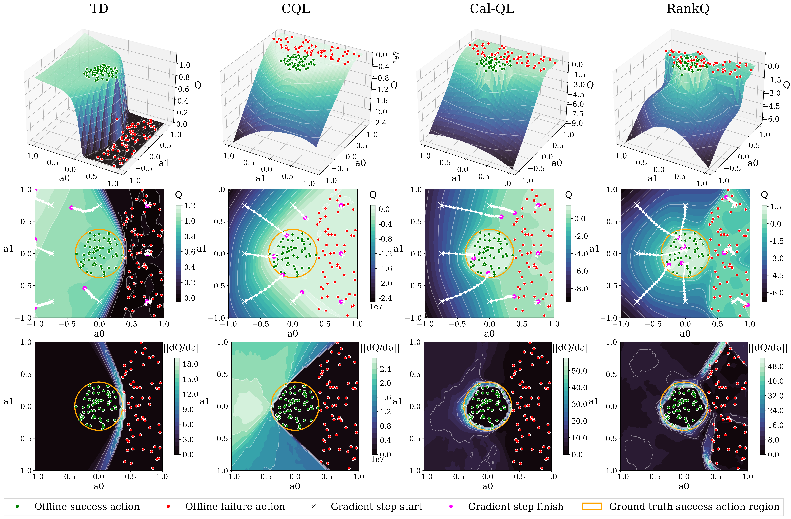
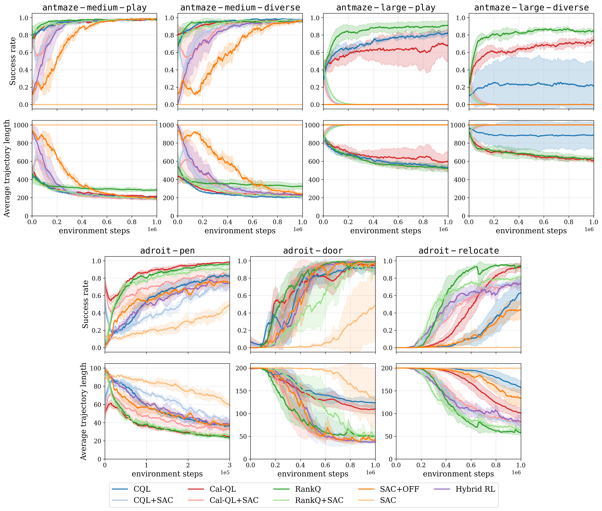
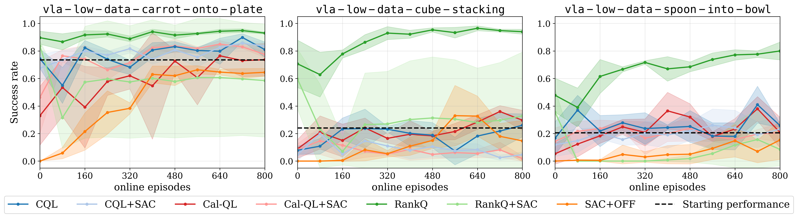
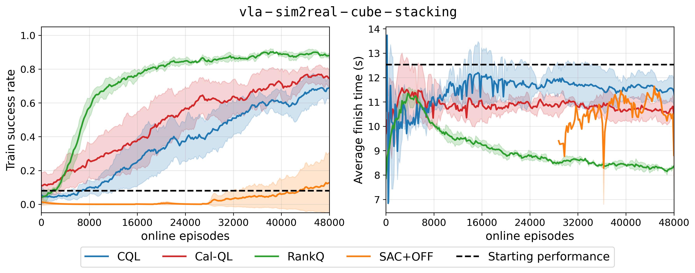

Toy example visualizing the Q-landscape for a fixed state $s$ and 2D action space $(a_0, a_1) \in \mathcal A$ under different critic objectives after offline training. The first row shows the 3D Q-manifold; the second row shows a 2D projection with eight sampled actions and their gradient ascent trajectories; and the third row shows $\partial Q/\partial a$ magnitudes. By explicitly shaping the Q-landscape, RankQ enables the largest number of trajectories to converge toward the optimal action region.
Abstract
Offline-to-online reinforcement learning (RL) improves sample efficiency by leveraging pre-collected datasets prior to online interaction. A key challenge, however, is learning an accurate critic in large state--action spaces with limited dataset coverage. To mitigate harmful updates from value overestimation, prior methods impose pessimism by down-weighting out-of-distribution (OOD) actions relative to dataset actions. While effective, this essentially acts as a behavior cloning anchor and can hinder downstream online policy improvement when dataset actions are suboptimal. We propose RankQ, an offline-to-online Q-learning objective that augments temporal-difference learning with a self-supervised multi-term ranking loss to enforce structured action ordering. By learning relative action preferences rather than uniformly penalizing unseen actions, RankQ shapes the Q-function such that action gradients are directed toward higher-quality behaviors. Across sparse reward D4RL benchmarks, RankQ achieves performance competitive with or superior to seven prior methods. In vision-based robot learning, RankQ enables effective offline-to-online fine-tuning of a pretrained vision-language-action (VLA) model in a low-data regime, achieving on average a 42.7% higher simulation success rate than the next best method. In a high-data setting, RankQ improves simulation performance by 13.7% over the next best method and achieves strong sim-to-real transfer, increasing real-world cube stacking success from 43.1% to 84.7% relative to the VLA’s initial performance.
Methodology
Rather than treating all OOD actions as equally inferior, RankQ enforces structured action ordering in a way that shapes the Q-landscape to point toward optimal actions. We partition the dataset $\mathcal D$ into two unique subsets containing exclusively success and failure trajectories, denoted by $\mathcal D_{\text{success}}$ and $\mathcal D_{\text{failure}}$. For transitions $(s,a) \sim \mathcal D_{\text{success}}$, we construct several classes of self-supervised suboptimal actions that capture different types of deviations from optimal behavior:
- Noisy actions: $a_\epsilon = a + \epsilon$, where $\epsilon \sim \mathcal N(0, \sigma)$, representing actions with small perturbations.
- Very noisy actions: $a_{2\epsilon} = a + 2\epsilon$, representing actions with larger perturbations.
- Random actions: $a_r \sim \mathcal U(-1,1)^{|a|}$, representing arbitrary actions.
- Permuted actions: $a_p \sim \mathcal D$, representing actions sampled from unrelated states.
These constructions allow us to impose structured ordering constraints. First, we enforce that successful actions are preferred over all suboptimal variants:
Enforcing only this success-ranking constraint would essentially produce a Q-landscape with a gradient field similar to CQL and Cal-QL. Rather than stopping here, we also enforce ordering among suboptimal actions by using action-space proximity to successful actions as a heuristic for relative quality:
Finally, we incorporate failure trajectories to provide additional supervision in low-quality regions of the state space. We enforce that a failure dataset action is still preferable to random actions:
but refrain from imposing stronger ordering constraints due to the absence of a meaningful notion of relative quality. The full multi-term pairwise ranking loss is formulated in the paper.
D4RL Results

Sparse-reward D4RL benchmark results across 3 random seeds. Curves start after offline RL has concluded.
RankQ achieves performance competitive with or superior to seven prior methods for the antmaze and adroit environments.
VLA RL fine-tuning with low-data regime Results

Low-data VLA RL fine-tuning results across 3 random seeds. Curves start after offline RL has concluded.
We define the low-data regime as using 200 VLA self-rollouts as the offline dataset together with 8 online rollouts per update. Using this limited data budget, RankQ is the only algorithm that significantly improves the VLA beyond its baseline performance. Note that since cube stacking and spoon-into-bowl have only about a 20% initial success rate, roughly 80% of the offline dataset consists of failure trajectories. RankQ has on average 42% higher success rate compared to the next best method.
VLA RL fine-tuning with high-data regime Results

High-data VLA RL fine-tuning results across 3 random seeds. Curves start after offline RL has concluded.
We define a high-data regime as using 800 VLA self-rollouts as the offline dataset together with 192 online rollouts per update. WIth an initial VLA success rate of about 8%, only about 64 successful trajectories exist in the offline dataset. Extensive domain randomization is used for this environment to enable sim-to-real transfer. RankQ has a 13.7% higher success rate and 25.7% faster task completion speed compared to the next best method.
Sim-to-Real Results
We zero-shot sim-to-real deploy a RankQ policy trained with the high-data regime in the real world and compare its performance with the VLA's initial performance. RankQ increases real-world cube stacking success from 43.1% to 84.7% while increasing the average task completion speed by 20.3% over 144 experiments.
Exp. 37. The initial VLA misses the grasp on the green cube and then hovers in confusion. After RankQ fine-tuning, the policy is able to grab and stack the cubes in one attempt.
Exp. 15. The initial VLA attempts to grasp the green cube repeatedly without success. After RankQ fine-tuning, the policy is able to grab and stack the cubes in one attempt.
Exp. 25. The initial VLA moves toward the green cube, but after the cubes get occluded by the manipulator, the policy hovers in confusion. After RankQ fine-tuning, the policy misses its first grasp attempt but then quickly and deliberately stacks the cube successfully.
Exp. 6. The initial VLA misses the grasp on the green cube and then hovers in confusion. After RankQ fine-tuning, the policy also misses some grasp attempts and even drops the cube early. Despite this, the RankQ policy quickly reattempts the task, leading to success.
Citation
If our work has proved useful, please consider citing our work:@misc{choi2026rankqofflinetoonlinereinforcementlearning,
title={RankQ: Offline-to-Online Reinforcement Learning via Self-Supervised Action Ranking},
author={Andrew Choi and Wei Xu},
year={2026},
eprint={2605.11151},
archivePrefix={arXiv},
primaryClass={cs.AI},
url={https://arxiv.org/abs/2605.11151},
}